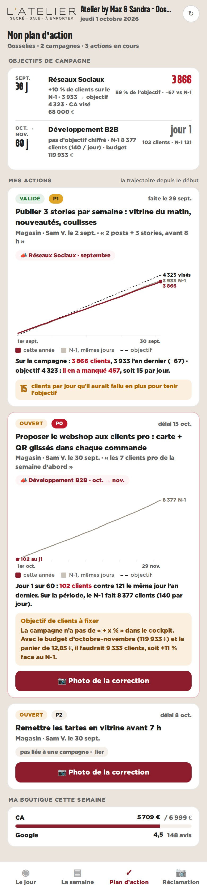
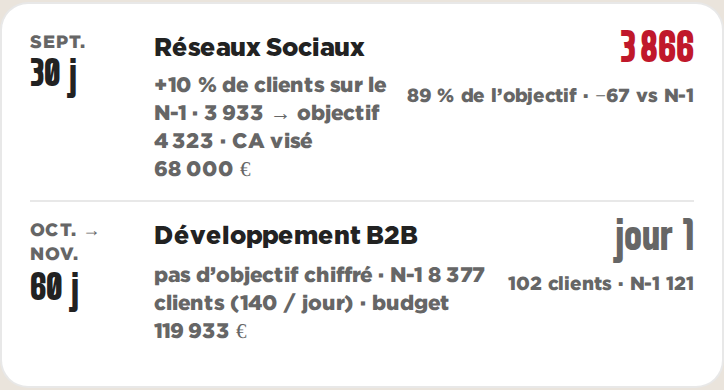
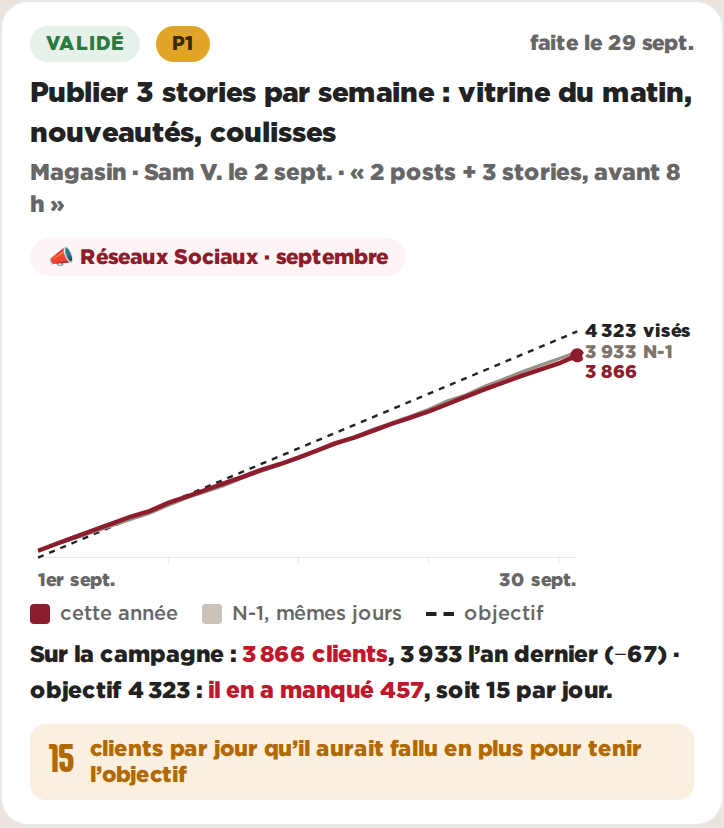

Plan d’action · objectifs de campagne · Gosselies · données réelles du 01/10/2026, actions en illustrationB — La frise des campagnes, la trajectoire cumulée
Les campagnes en frise compacte (mois, objectif, résultat). Sur chaque action, les clients cumulés depuis le premier jour : la courbe de cette année face à celle de l’an dernier, et la droite de l’objectif. L’écart se voit grandir ou se refermer, et « combien par jour il aurait fallu » est écrit.

Le plan d’action au téléphone (390 px)

La campagne de septembre

L’action liée à la campagne
Pour
- La trajectoire dit tout de suite si on tient ou si on perd, et depuis quand
- Le même graphique sert en cours de campagne (courbe qui avance) et après (bilan)
- La frise prend peu de place : les actions arrivent vite
- Jour 1 d’octobre : la courbe N-1 montre ce qu’il y a à battre sur 60 jours
Contre
- Moins intuitif qu’une barre pour une partie des franchisés (cumul)
- Les mauvaises semaines se voient moins (une pente, pas un creux)
- Trois courbes proches en fin de mois : les étiquettes se serrent